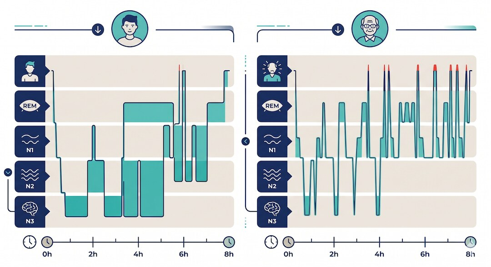
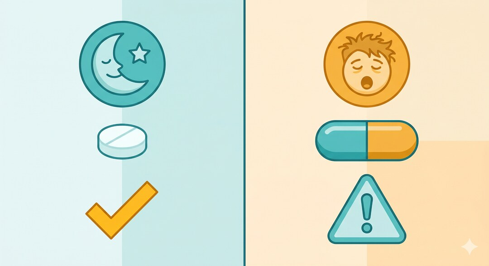
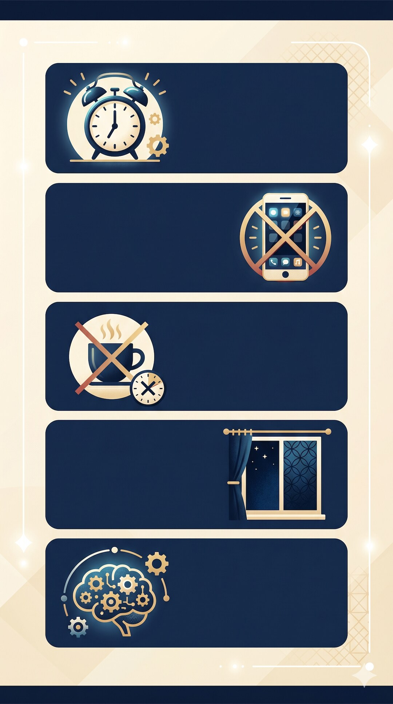

Szybka odpowiedź
Godzina 3:00 nie wskazuje jednej przyczyny ani „wyrzutu kortyzolu”. Przez 14 dni zapisuj porę snu, pobudki, alkohol, kofeinę, drzemki, uderzenia gorąca, oddawanie moczu i senność w dzień. Przy przewlekłej bezsenności leczeniem pierwszego wyboru jest CBT-I, nie sama higiena snu. Głośne chrapanie, bezdechy lub zasypianie za kierownicą wymagają oceny.
Kluczowe wnioski
- Nocna pobudka staje się problemem klinicznym, gdy powtarza się, utrudnia ponowne zaśnięcie i pogarsza funkcjonowanie w dzień.
- Stała godzina 3:00 nie rozpoznaje zaburzenia kortyzolu, wątroby ani innego narządu.
- CBT-I łączy kontrolę bodźców, pracę z czasem w łóżku i przekonaniami; sama lista zasad higieny snu to mniej.
- Chrapanie z przerwami oddechu, senność i poranne bóle głowy zwiększają podejrzenie bezdechu.
Dlaczego możesz budzić się właśnie około 3 w nocy?
Pobudka może wypadać o podobnej porze, gdy rytm snu, pora położenia i bodźce są powtarzalne. Przyczyną bywa bezsenność, alkohol, menopauzalne uderzenia gorąca, ból, potrzeba oddania moczu, leki, depresja lub bezdech. Sama godzina nie pozwala wskazać hormonu ani narządu odpowiedzialnego za problem.
Pełny obraz zmian snu po 50-tce znajdziesz w Centrum Snu po 50-tce.

Co zapisać przez pierwsze 14 dni?
Codziennie zanotuj godzinę położenia, szacowany czas zaśnięcia, liczbę i długość pobudek, pobudkę końcową, drzemki, kofeinę, alkohol, ruch i leki. Dodaj chrapanie, suchość w ustach, nocne oddawanie moczu, ból i uderzenia gorąca. Dziennik ujawnia wzorzec i daje lekarzowi więcej niż samo „budzę się o trzeciej”.
Nie oceniaj nocy zegarkiem co kilka minut; urządzenie konsumenckie szacuje sen i nie diagnozuje bezdechu.

Co robić po nocnej pobudce?
Jeśli czujesz narastającą frustrację i nie zasypiasz, wyjdź z łóżka do spokojnego, przyciemnionego miejsca i wróć, gdy pojawi się senność. Utrzymuj stałą porę wstawania. To element kontroli bodźców stosowanej w CBT-I. Ograniczanie czasu w łóżku powinno być prowadzone ostrożnie przy padaczce, manii lub pracy wymagającej pełnej czujności.
Ogólne zasady regeneracji znajdziesz w poradniku snu po 50-tce, ale przewlekła bezsenność wymaga pełnego programu.

Kiedy potrzebna jest diagnostyka lub leczenie CBT-I?
Pomocy szukaj, gdy problem występuje co najmniej 3 razy w tygodniu, trwa około 3 miesięcy lub wyraźnie zaburza dzień. Wcześniej reaguj przy głośnym chrapaniu z bezdechami, zasypianiu w niebezpiecznych sytuacjach, nasilonej depresji, bólu albo nowych objawach. CBT-I jest leczeniem pierwszego wyboru przewlekłej bezsenności u dorosłych.
Jeżeli dominuje stres i gonitwa myśli, nie sprowadzaj problemu do hormonu; pomocny kontekst daje artykuł o kortyzolu i stresie. Objawy wymagające szerszej oceny porządkują badania po 50-tce.
| Wzorzec | Możliwy trop | Następny krok |
|---|---|---|
| Pobudka po alkoholu | Fragmentacja snu w drugiej części nocy | Porównać noce bez alkoholu |
| Chrapanie i bezdechy | Podejrzenie obturacyjnego bezdechu | Ocena medyczna snu |
| Uderzenia gorąca | Objawy menopauzalne | Rozmowa o leczeniu objawów |
| Długi czas w łóżku, frustracja | Mechanizm utrwalający bezsenność | Pełne CBT-I |
Godzina pobudki jest wskazówką w dzienniku, a nie diagnozą przypisaną do jednego hormonu lub narządu.
Najczęściej zadawane pytania
Czy budzenie się o 3 oznacza wysoki kortyzol?
Nie. Sama godzina nie rozpoznaje nadmiaru kortyzolu; potrzebne są objawy, historia i ewentualne celowane badania.
Czy melatonina rozwiąże nocne pobudki?
Nie u każdego. Efekt zależy od przyczyny, preparatu i pory, a przewlekła bezsenność wymaga przede wszystkim oceny i CBT-I.
Ile dni prowadzić dziennik snu?
Praktycznym minimum przed oceną są 14 kolejnych dni obejmujących dni robocze i wolne.
Kiedy nocne wybudzenia są bezsennością przewlekłą?
Gdy trudność występuje co najmniej 3 razy tygodniowo przez około 3 miesiące, mimo warunków do snu, i pogarsza dzień.
Jeśli chcesz połączyć sen, nocne wybudzenia, regenerację i codzienne nawyki w jeden plan, przejdź do Centrum Snu po 50-tce.
Źródła
- ACP guideline - CBT-I first line
- CBT-I in older adults - meta-analysis
- Behavioral insomnia therapy in older adults
- National Institute on Aging - sleep
Uwaga: Artykuł ma charakter informacyjny i edukacyjny. Nie zastępuje konsultacji, diagnozy ani indywidualnego leczenia.